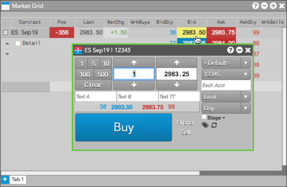
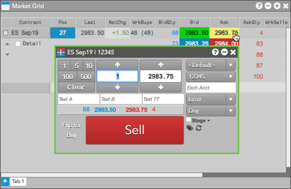
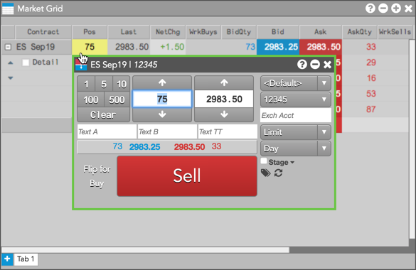

Note: Before using this procedure, make sure the Broker mode setting is enabled in the selected Order Ticket.
To launch an Order Ticket in Broker mode:
Open Market Grid with the desired instrument, if necessary.
Do one of the following:
For a Buy order, click the value in the Bid or BidQty column.

For a Sell order, click the value in the Ask or AskQty column.

For a position offset order, click the value in the Pos column.
Note: The Order Ticket displays the button on the opposite side of the position.
